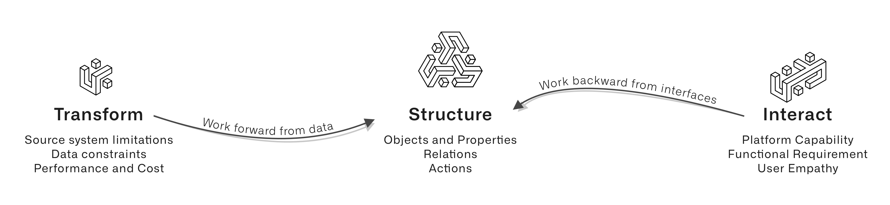

A use case is a time-bound effort by a dedicated team to deliver new capabilities on the platform for a set of users.
A use case is not âintegrate source system Xâ or âapply ML technique Yâ. Instead, a use case focuses on the capabilities we need to provide to our users, rather than the implementation details along the way. Framing development work as a use case forces us to confront the value proposition of our project immediately. Whose work life will improve as a result of this new capability? And what can we measure to know whether we have succeeded?
Along the way to building our use case, we will unlock many of the compounding features of Foundry, such as:
Holding our use case(s) and their outcomes as guides, we stay connected to real-world value, even as we get into the complexity of specific implementations throughout Foundry.
The craft of developing a use case on Foundry involves decomposing the functional requirements of the outcomes and choosing the implementation pattern(s) for each component.
The solution design process described below is an approach to this challenge. It focuses on distilling the use case requirements into a format that informs decisions about interface implementation and data enrichment. These decisions in turn inform the ontology design, which acts as the use case API and abstracts pipeline implementation details from the end user interactions.
In this way, the solution design framework encourages a holistic approach as depicted in the image below:

Breaking the solution design into buckets around transforming, structuring, and interacting with use case data pivots the development process from purely user-centric requirements into platform-centric components. With this framework, we can then look at:
We can also judge tradeoffs between development complexity and strict adherence to business requirements. Working through the solution design framework should make it possible to reevaluate priorities.
For example, suppose the original business requirement is to render a specific chart and include some specific form input, which may require odd ontology configurations and significant development effort in Slate. If instead we created these functionally-equivalent visualizations and Actions (meet the functional requirement), then we can use Workshop at 1/10th the investment in front-end development and keep a cleaner ontology data structure.
The next section covers capturing a use case description and distilling these functional requirements.